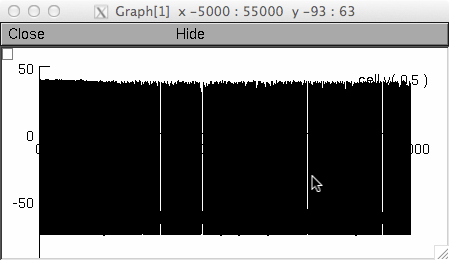
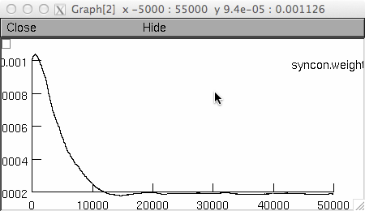
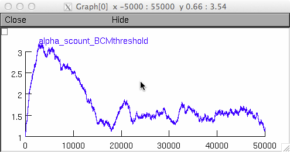

This is the readme file for the model associated with the paper Peter Jedlicka, Lubica Benuskova, Wickliffe C. Abraham (2015) A Voltage-Based STDP Rule Combined with Fast BCM-like Metaplasticity Accounts for LTP and Concurrent "Heterosynaptic" LTD in the Dentate Gyrus in vivo. PLOS Computational Biology 11(11):e1004588. doi:10.1371/journal.pcbi.1004588 Send bug reports, comments and questions on how to use this model to jedlicka@em.uni-frankfurt.de The code for granule cell morphology, active and passive properties was taken from Santhakumar et al: https://senselab.med.yale.edu/modeldb/ShowModel.cshtml?model=51781 Synopsis: The vast majority of computational studies that model synaptic plasticity neglect the fact that in vivo neurons exhibit an ongoing spontaneous spiking which affects the dynamics of synaptic changes. Here we study how key components of learning mechanisms in the brain, namely spike timing-dependent plasticity and metaplasticity, interact with spontaneous activity in the input pathways of the neuron. Using biologically realistic simulations we show that ongoing background activity is a key determinant of the degree of long-term potentiation and long-term depression of synaptic transmission between nerve cells in the hippocampus of freely moving animals. This work helps better understand the computational rules which drive synaptic plasticity in vivo. Details: We used computational modeling of plasticity at the medial and lateral perforant path inputs to dentate gyrus granule cells to account for the effects of different frequencies and temporal patterns of HFS on the induction of homosynaptic LTP and concurrent heterosynaptic LTD, as observed in vivo (Bowden et al. Hippocampus 2012). The main conclusions are: (1) Combined STDP and BCM rules can reproduce the LTP and heterosynaptic LTD, (2) as long as spontaneous activity continues in the input pathways. (3) The degree of LTD depends on the degree of LTP, due to the implemented homeostatic BCM rule that stabilizes cell firing rate. (4) Standard 100 Hz-TBS gives counter-intuitively poor LTP and LTD because this protocol is very good at firing granule cells, which in turn causes the potentiation amplitude parameter to transiently decline, hence braking LTP. Usage: 1. Download and install NEURON (available from http://www.neuron.yale.edu/neuron/download) 2. Compile the NEURON mod files: mswin: run mknrndll and select this folder to create the nrnmech.dll linux: run nrnivmodl in this folder mac os x: drag and drop this folder onto mknrndll 3. Insert and use the STDP-BCM mechanisms from the mod files: Exp2SynSTDP_multNNb_globBCM_intscount_precentred.mod is a synaptic mechanism implementing a form of stream-specific spike-timing-dependent plasticity (STDP). BCMthreshold.mod is a cell-wide metaplasticity mechanism for computing sliding BCM threshold based on recent spike count (Benuskova et al. PNAS 2001, Benuskova and Abraham JCNS 2007) You can find an example using the 2 interlinked mechanisms (from the 2 mod files) in the mosinit.hoc file. Start the simulation: mswin: double click the mosinit.hoc file using windows explorer linux: type "nrngui mosinit.hoc" in the shell prompt in this folder mac os x: drag and drop the mosinit.hoc file onto the nrngui icon To run the simulation click on Init & Run button. The simulation executes stochastic activation of one STDP-BCM synapse with mean frequency of 100 Hz. The synapse is connected to an active single compartment cell with hh channels. The simulation starts running and begins to generate a plot of the voltage (cell.v),  weight (syncon.weight[1])  and integrated spike count (alpha_scount_BCMthreshold).  Note the homeostatic adjustment of spiking, weight and the spike count (due to BCM-like metaplasticity).